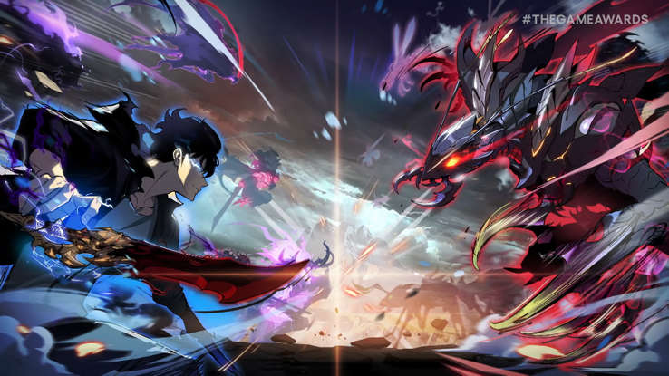
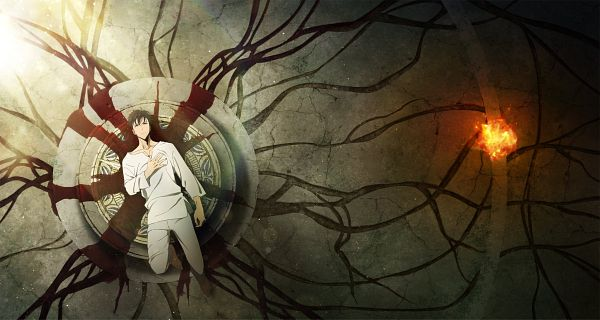

"Solo Leveling (hangul: 나 혼자만 레벨업; rr: Na Honjaman Rebeleop), também traduzido alternativamente como Only I Level Up, é uma web novel sul-coreana escrita por Chugong. Foi serializado na plataforma digital de quadrinhos e ficção de Kakao, KakaoPage, a partir de 25 de julho de 2016, e mais tarde foi publicado na íntegra pela D&C Media sob seu selo Papyrus em 4 de novembro de 2016.
Uma adaptação webtoon do Solo Leveling foi serializada pela primeira vez no KakaoPage em 4 de março de 2018; foi ilustrado por Jang Sung-Rak (também conhecido como Dubu), o CEO da Redice Studio, que morreu em 23 de julho de 2022 após sofrer uma hemorragia cerebral.[1] A primeira temporada do webtoon foi concluída em 19 de março de 2020 e sua segunda temporada começou em 1º de agosto de 2020, concluindo em dezembro de 2021 com seu 179º capítulo. Seus capítulos individuais foram coletados e publicados pela D&C Media em cinco volumes em 20 de setembro de 2022. A novel foi licenciada em inglês pela Yen Press. Atualmente Solo Leveling possui mais de 200 capítulos.[2] Um jogo de RPG está em desenvolvimento na Netmarble.[3] Uma adaptação para anime da A-1 Pictures está programada para estrear em janeiro de 2024.[4]

Trama principal
A história segue Jinwoo Sung, um caçador de baixo nível em um mundo onde caçadores são pessoas com habilidades especiais que lutam contra monstros que saem das masmorras. No entanto, Jinwoo é considerado um dos caçadores mais fracos, sempre sendo o último nas missões e recebendo poucas oportunidades de melhorar.
Em uma missão particularmente perigosa, ele e um grupo de caçadores acabam presos em uma masmorra de alto nível. Durante o confronto, muitos membros do grupo morrem e Jinwoo fica gravemente ferido. É nesse momento que ele recebe uma chance inesperada: um sistema misterioso lhe concede a habilidade de "evoluir", como se fosse um personagem de um videogame. Esse sistema permite que ele complete missões, ganhe recompensas e, o mais importante, aumente seu poder à medida que progride.
A partir desse momento, Jinwoo começa sua jornada de transformação, passando de um caçador fraco a um dos mais poderosos. Conforme ele ganha mais força, enfrenta desafios ainda maiores e adentra um mundo cheio de mistérios e perigos. Ao longo da história, ele descobre segredos ocultos sobre as masmorras e os seres por trás delas.
 Temas e características
"Solo Leveling" explora temas como superação pessoal, crescimento por meio da experiência e enfrentamento de adversidades. Jinwoo enfrenta inimigos poderosos, tanto humanos quanto monstros, e deve lidar com as consequências de seu poder crescente.
A obra é marcada por
Sistema de níveis semelhante ao de um jogo, o que dá um toque único à narrativa. Cenas de ação intensas e combates impressionantes, que mostram a evolução de Jinwoo. Mistério sobre as origens de seu poder e sobre as forças que controlam os portais e as masmorras. Desenvolvimento de personagens, com destaque para a ascensão de Jinwoo em um mundo onde a hierarquia dos caçadores é crucial Adaptações.
"Solo Leveling" começou como uma light novel online e, devido ao seu grande sucesso, foi adaptada para um manhwa, que também se tornou extremamente popular. O manhwa é ilustrado por Jang Sung-Rak, com arte impressionante que complementa a narrativa envolvente. Em 2022, foi anunciado que "Solo Leveling" seria adaptado para anime, o que gerou uma grande expectativa entre os fãs ao redor do mundo. Em resumo, "Solo Leveling" é uma história sobre crescimento, ação e fantasia, que segue um protagonista em sua jornada para se tornar mais forte enquanto enfrenta desafios e descobre os mistérios por trás de seu mundo.